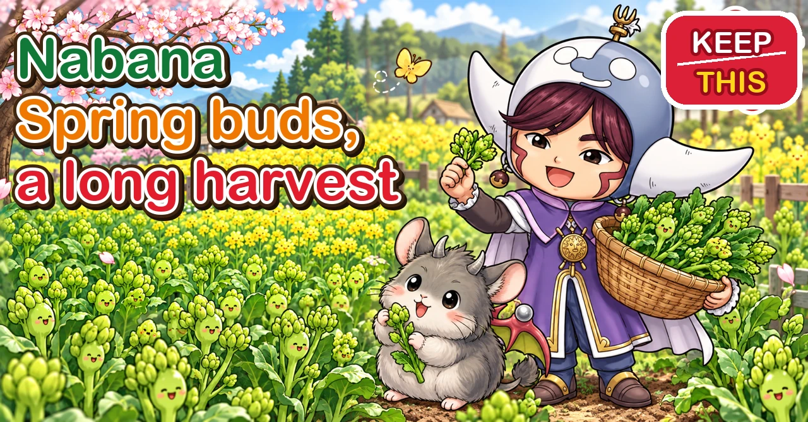
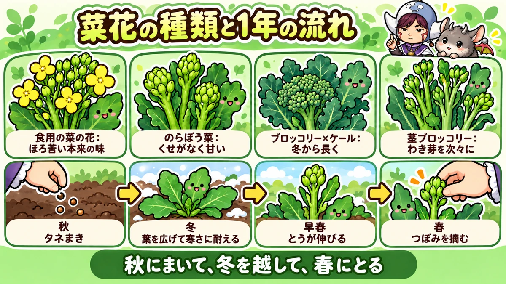
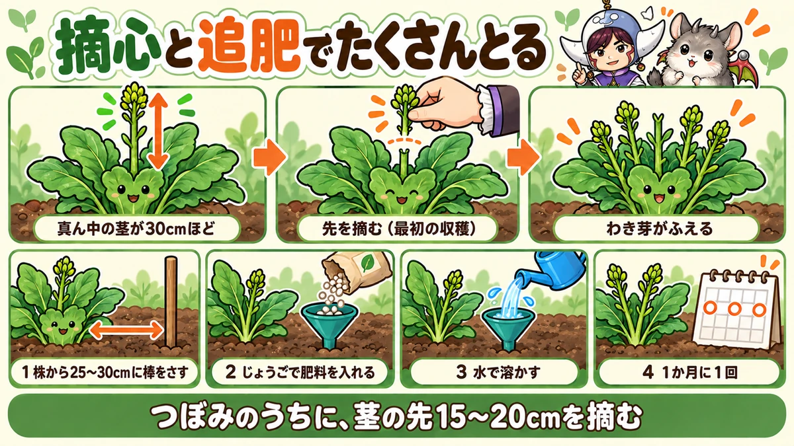

Nabana 🌼 The complete guide to spring brassica shoots

🌼 “I want a spring crop, but I am not sure which flowering brassica to grow.”
🌼 “The central stem is getting tall. Should I cut it, and where?”
🌼 “My cabbage, Japanese mustard spinach or radish has bolted. Can I still eat the flower shoots?”
Hello, I'm Eiko. Eight years of growing vegetables organically and without pesticides, and a teaching licence in science.
Nabana is the name used for the unopened flower buds, tender stems and soft leaves of brassica vegetables. A single autumn sowing can overwinter quietly and then produce shoot after shoot in spring. This guide brings together the types, sowing, winter care, pinching, feeding, aphids, harvesting, bolted vegetables and clearing the bed.
Where you are: the seasonal timings here are for a home garden in central Japan. Shift the months for your climate, first frosts and spring warmth. “Nabana” is used here for edible brassica shoots rather than one single species. A variety called Norabo-na is a Japanese spring brassica; in another country you may need to look for a similar sprouting brassica or broccoli raab.
The essentials: sow or plant in autumn, protect young plants from insects, let the rosette overwinter, then pinch the central stem at about 30 cm. Feed when harvest begins, pick 15–20 cm tender shoots while buds are still closed, and keep checking the stems for aphids.
① Nabana at a glance
- Family: brassicas, including cabbage relatives, Japanese mustard spinach called komatsuna, radish and turnip.
- What you eat: unopened flower buds with tender stems and leaves.
- Common choices: edible flowering rape, a Japanese variety called Norabo-na, stem broccoli, and broccoli–kale hybrids.
- Sowing: autumn; late September is a useful guide for Norabo-na.
- Harvest: spring for many types, and winter to spring for some sprouting varieties; take about 15–20 cm while the buds are closed.
- Pinching: remove the tip when the central stem is about 30 cm tall.
- Feeding: begin side dressing when harvest starts, about once a month.
- Watch for: aphids on the tips and buds, and birds on winter leaves.

What this diagram says （図解の文字）
- Nabana types and the yearly flow
- "Edible flowering rape: the original slightly bitter flavour" ／ "Norabo-na: mild and sweet"
- "Broccoli–kale hybrid: long harvest from winter" ／ "Stem broccoli: side shoots one after another"
- "Autumn: sow seeds" → "Winter: spread leaves and withstand cold" → "Early spring: stems extend" → "Spring: pick the buds"
- "Sow in autumn, overwinter, harvest in spring"
② What nabana is
Small buds rather than one large head
Nabana means the buds that a brassica makes before opening its flowers, together with the soft stem and leaves around them. Broccoli is also a bud crop, but it makes one large head first. Nabana is harvested as many small buds at the tips of slender stems, so the plant can keep producing after each cut.
Edible flowering rape
The traditional edible flowering rape has a gently hot, astringent or bitter flavour compared with milder types. Sow in autumn and it may start flowering around February. Pick unopened buds for the table and leave a few behind if you want yellow flowers to brighten the bed. Once it has been sown, it needs little attention and can make a large plant with many shoots.
Norabo-na
Norabo-na is known as a productive spring nabana. It is described as a western-type flowering brassica originating from a crossing of rape and cabbage relatives and is said to have been grown around western Tokyo during the Edo period. Its spring stems are mild and sweet, without the stronger bite of traditional flowering rape, and suit blanching, dressings, soup and stir-fries.
Norabo-na is also described as self-pollinating, so it is less likely to cross with nearby brassicas. That makes it a useful choice if you want to save seed, although keeping different flowering brassicas apart remains sensible when seed purity matters.
Broccoli–kale hybrids and stem broccoli
A broccoli–kale hybrid can look like a collection of small broccoli heads. Pick the buds, stems and soft leaves together. If planted in September, some begin producing around November and continue towards spring. Stem broccoli is enjoyed in a similar way: after the central bud is removed, side shoots emerge repeatedly. Spring is often its busiest harvest period.
Choosing a type
- For a classic spring brassica flavour, choose edible flowering rape.
- For a mild, sweet and generous spring harvest, look for a Japanese variety called Norabo-na.
- For harvests starting in winter, try a broccoli–kale hybrid or stem broccoli if an equivalent is sold locally.
- For yellow flowers as well as food, leave a few edible-rape buds to open.
- For saving seed, Norabo-na is less prone to crossing than many other brassicas.
If one choice is difficult, grow small amounts of several types and compare their flavour and timing.
③ Autumn sowing and wintering
Choose the sowing window
Sow nabana in autumn. Late September is a guide for Norabo-na, while edible flowering rape is often planted around October and can begin flowering around February. Always give priority to the seed packet for the variety you have bought.
Prepare the bed
Use the same kind of bed preparation as for cabbage, Chinese cabbage and komatsuna. Work in lime, compost and fertiliser about two weeks before planting. Avoid a bed where brassicas have been grown repeatedly, since rotation reduces the chance of carrying problems from one crop to the next.
Sow or transplant
You can sow directly into the bed or raise seedlings in pots and transplant them. Many plants become large, so allow generous spacing. Cover the bed with insect netting after sowing or planting to protect the young leaves from autumn insects.
Let the rosette rest
Through winter, the plant may spread its leaves close to the ground. This is a normal cold-weather form, not a sign that it is dying. Nabana is hardy and usually needs little special care. In a colder region, fleece can protect it from frost and cold wind. Birds may eat brassica leaves when food is scarce, so keep a net in place if they are visiting.

What this diagram says （図解の文字）
- Pinch and feed for a large harvest
- "The central stem is about 30 cm" → "Pinch the tip (first harvest)" → "Side shoots increase"
- "Place a stick 25–30 cm from one plant" ／ "Put fertiliser in with a funnel" ／ "Dissolve with water" ／ "Once a month"
- "Pick 15–20 cm at the tip of the stem while the buds are closed"
Winter care for stem broccoli
When stem broccoli is planted in autumn, harvest can begin around November. Cut the first central bud with clean scissors, making a sloping cut, and side shoots will form around the plant. Cut a side shoot when it is about 10 cm long and has a small bud at its tip.
- When insects have become less active around mid-November, remove the insect net if the plant needs room.
- If the large plant begins to lean, add a stake and tie it so wind cannot rock it.
- In a warm winter buds can open quickly, so harvest promptly.
- Continue feeding about once a month.
Harvesting every two or three weeks can keep the plant productive towards spring.
Winter birds
After the new year, birds may target brassica leaves because other food is scarce. Broccoli relatives can be particularly attractive. Enclose the plants with netting, especially when many birds are perching in trees around the garden.
④ Spring care: pinch the central stem
As the weather warms, a thick stem rises from the centre of the plant. When it is about 30 cm tall, pinch or cut off its tip. The piece you remove is the first nabana harvest. Removing the top releases the side buds at the leaf joints, so many new stems can grow instead of one central stem carrying the whole crop.
The five-step pinch
- Measure the thick central stem. When it is about 30 cm, it is ready.
- Find a point about 15–20 cm below the cluster of buds at the tip.
- Break it by hand or cut it with clean scissors, and eat the tender tip.
- Wait for side shoots to emerge from the leaf joints on the remaining stem.
- Harvest each side shoot while its buds are still closed.
Feed after pinching to support the new shoots. Choose a dry day so the cut surface dries quickly, and avoid cutting just before rain so water does not sit on the wound.
⑤ Feeding and aphids
Side dress when harvest begins
Repeated shoots and buds require a steady supply of nutrients. Once harvest has started, side dress about once a month. One example is about 30 mL of chicken manure per plant. Use the product label for your product and consider the plant’s growth rather than adding a fixed amount blindly.
A stick-and-funnel method
When a large plant makes it difficult to scatter feed near the base, make a small feeding hole away from the stem:
- Push a thin stick into the soil 25–30 cm from the plant centre.
- Push to about 12–13 cm deep and rotate the stick to widen the hole.
- Remove the stick, insert a funnel and put fertiliser into the hole.
- Pour water into the hole to dissolve the fertiliser.
- Replace the soil.
This places feed at a root depth with less waste and can act more quickly. Keep fertiliser off the leaves and growing tips.
Aphids arrive in spring
Aphids often gather on spring nabana stems, buds and growing tips, sucking sap. Walk around the plants regularly. When numbers are small, brush them away with a finger, a strip of tape or a soft brush. You can also wash them off with water.
When there are many aphids
Some gardeners spray a home oil-and-soap mix, but under Japan's pesticide rules, oil-and-soap spray isn't approved for pest control.
If one stem is densely covered, cutting it off and disposing of it can be quicker than trying to clean every aphid. Wash the harvested shoots well before eating.
⑥ Harvest unopened buds
Pick before flowering
The best eating stage is when the buds are firm and closed. Once flowers open, the stems become tougher and the flavour can become more bitter. Choose a shoot whose buds are still tight.
Take the top 15–20 cm
Hold the stem about 15–20 cm below its tip and bend it gently. Where it snaps cleanly is usually tender. If it will not break easily, move higher and cut there with scissors. Leave two or three leaves below the cut so another side shoot can form.
Harvesting steps
- Select a stem with tightly closed buds.
- Hold it 15–20 cm below the tip and test the bend.
- Snap at the tender point, or make a sloping cut just above a hard section.
- Leave two or three leaves below the cut.
- Put the shoots in water or cool them soon after picking because they wilt quickly.
Harvest in the cool morning for crisp, hydrated stems. Shoots picked in midday heat wilt more quickly. If you have a large harvest, blanch it briefly and divide it into small portions for later meals.
More picking makes more shoots
Each cut removes the tip but leaves leaf joints below it. New side shoots arise there and make more buds. Regular picking therefore extends the harvest, as long as the plant is watered and fed according to its growth.
The harvest season
Timing varies with type and climate. In central Japan, spring nabana is often at its peak from late March through April and May. A broccoli–kale hybrid or stem broccoli may begin in November and continue much longer.

What this diagram says （図解の文字）
- Bolted vegetables can also become nabana
- "Chinese cabbage: full sweetness" ／ "Komatsuna: a slightly astringent flavour"
- "Radish: pale flowers" ／ "Turnip: a gentle flavour"
- "Once flowers open, it becomes bitter" ／ "Watch for aphids" ／ "Clear the crop promptly when finished"
- "Any of them can become nabana while the buds are closed"
⑦ Edible flowering rape and Norabo-na
Edible flowering rape from October
Sow or plant edible flowering rape around October. It overwinters and may start flowering around February, reaching a full spring display. Pick some buds for food and leave a corner to flower if you want yellow blooms. Once flowering is finished, clear the plant because open flowers can attract insects such as cabbage white butterflies.
Norabo-na from late September
Sow Norabo-na in a pot for transplanting, or sow it directly and thin as it grows. Protect it from autumn insects with insect netting. Give the plants plenty of room because a wintered plant becomes large and makes many spring side shoots. It is cold hardy and usually needs little winter attention. In spring, harvest the tender stems and buds as they extend; the mild, sweet shoots are easy to use in many dishes.
Keep some types separate for seed
If you grow plants only for eating, several types can stand near one another. If you want seed, different flowering brassicas nearby can cross and produce offspring unlike the parent. Choose a less-crossing type such as Norabo-na or isolate the flowering plants.
⑧ Bolted vegetables are a spring crop
A cabbage or Chinese cabbage that failed to make a head, a komatsuna or turnip that was missed, and a radish left in the bed can all send up a flowering stem in spring. Their unopened buds are edible nabana. Small-scale growers sometimes sell these shoots, and they are a special crop that is not always easy to find in shops.
- Chinese cabbage: its shoots are described as especially sweet and can also be eaten raw when fresh.
- Komatsuna: the shoots carry the plant’s slightly astringent flavour.
- Pak choi: its flowering shoots are soft and easy to eat.
- Radish: its pale flowers make it distinctive.
- Turnip: the shoots have a gentle flavour even though the root becomes tough after bolting.
Use a late Chinese-cabbage planting
Chinese cabbage planted late may not wrap into a head. Leave it until spring and it can still provide shoots. A spare seedling or an empty corner can therefore become a deliberate nabana crop. Keep the hard outer leaves, pick the tender tip 15–20 cm at a time, and let new shoots emerge from the leaf joints.
Clear plants after flowering
Once many yellow flowers are open, stems become tougher and more bitter. Clear the plant rather than leaving it to attract insects and produce unwanted seed.
⑨ Clearing the bed and saving seed
Remove spent plants promptly
From April onwards, winter and spring crops are being cleared. A finished brassica left in place attracts insects. Cabbage white butterflies increase from around March and lay eggs that become caterpillars, so pull the spent plants when harvest is over.
Cut stems into small pieces
Old stems are thick and hard. Chop them with secateurs before placing them in the compost or debris area; smaller pieces break down more readily.
Do not use fresh brassica stems as straw mulch
Bolted flowering rape and mustard stems contain a lot of water. Laid on a bed as straw, they stay wet and rot. Dry, fibrous cereal straw such as wheat or rice straw is a better mulch. Bury chopped nabana residue in a trench between beds if you want it to break down in the soil.
Save seed when appropriate
Leave a plant after flowering and long pods will form. When the pods turn brown and dry, cut the plant, dry it further and collect the seed. Many brassicas cross readily, so the next generation may not match the parent. Norabo-na is a better candidate when you want similar seed year after year.
⑩ Early-spring direct sowing for baby leaves
This is a different way to enjoy brassicas rather than a standard nabana crop. In January or February, scatter seeds of a leafy brassica over a level bed. Cover them lightly with soil and press the surface firmly so it does not dry out; water well. Until March, lay fleece directly over the row. When insects appear in April, replace the fleece with an insect-net tunnel.
After about a month, thin the crowded places and eat the young leaves. Removing plants from the dense patches gives the remaining plants room to grow. The young leaves are tender, fragrant and sweet, so you can repeat the cycle of pulling and eating while the rest grows larger.
⑪ What winter leaves tell you
Leaves flat on the ground
A winter rosette spreads its leaves across the ground to avoid cold wind, use the slight warmth of the soil and catch weak sunlight without as much overlap. It is a survival shape, not a sign of imminent death.
Red-purple leaves
Severe cold can colour the leaf margins or whole leaves red-purple. The plant is making pigments associated with cold protection. As the weather warms, the leaves can return towards green.
Yellow lower leaves in spring
When the stem begins to extend, lower leaves may yellow as the plant sends resources to buds and new stems. It can also indicate that feed is running short. Side dress according to the plant’s condition and remove yellow lower leaves.
⑫ Through the season in central Japan
- Late September–October: sow or plant, and protect young plants with insect netting.
- November–December: let plants build size; broccoli–kale hybrids may begin producing.
- January–February: protect leaves from cold and birds; edible flowering rape may start to open from February.
- March: pinch a central stem at about 30 cm, begin feeding and look closely for aphids.
- Late March–May: harvest closed buds, feed about once a month and use bolted cabbage relatives as extra shoots.
- April–May: clear finished plants, or leave selected plants until pods dry if saving seed.
⑬ Where advice differs
How bitter should nabana be?
The traditional flowering-rape flavour includes a peppery, astringent bitterness. Some people enjoy it; others prefer mild Norabo-na, stem broccoli or a broccoli–kale hybrid. The choice is about taste, not a single correct variety.
When exactly should the tip be pinched?
Many growers use about 30 cm as the cue, while others pinch as soon as buds appear. Both aim to redirect the central stem’s strength to side shoots. Cutting a budded tip as the first harvest is a practical compromise.
Break by hand or use scissors?
Hand-breaking naturally finds a tender point. Scissors make a clean sloping cut and are convenient for thick stem broccoli. Whichever method you use, keep the scissors clean so problems are not carried between plants.
Should spring netting stay on?
Netting blocks cabbage white butterflies, but a large spring plant can press against it and become awkward to harvest. Some gardeners remove the winter net, inspect plants frequently and replace it with a tall tunnel only when caterpillars or aphids become conspicuous.
⑭ Common mistakes
Waiting until flowers open
Once flowers open, shoots become tougher and more bitter. Pick while buds are firmly closed.
Leaving one central stem
Without pinching, the central stem dominates and the harvest is smaller. Remove the tip at about 30 cm to encourage side shoots.
Forgetting side dressing
Repeated shoots need nutrients. Begin feeding when harvest starts and repeat about monthly while the plant is productive.
Missing the first aphids
Spring tips can become covered quickly. Inspect often and brush, wash or remove a small infestation early.
Pulling a stem hard
Hold the plant at its base while snapping, or use scissors, so the roots are not loosened.
Keeping a short net on a large plant
A tight net can press on the leaves and make insect damage harder to see. Remove it or raise the tunnel as the plant grows.
Leaving spent plants in place
Finished brassicas attract butterflies and caterpillars. Clear them promptly after harvest.
⑮ Questions
The stems are becoming thin
The plant may be tiring. Side dress and water if the soil is dry. Thin stems are normal late in the season but can still be eaten while the buds are closed.
How many plants do I need?
A few plants of Norabo-na or edible flowering rape can provide repeated spring shoots for a household when pinched and picked regularly. One or two plants in a large container can still be enjoyable.
How long can I harvest?
Timing varies, but regular spring picking can continue for more than a month from late March towards May. Stem broccoli and broccoli–kale hybrids can begin in November and run towards spring.
Can different types grow together?
Yes, if you are eating the plants. If you plan to save seed, separate flowering types or choose a less-crossing variety such as Norabo-na.
Can I plant a summer crop immediately afterwards?
Clear the brassica, prepare the soil and choose a different family such as tomato or cucumber rather than following brassicas with another brassica.
How do I harvest radish and turnip shoots?
When the root crop bolts, let the central stem rise and cut its tender tip while buds are closed. The root itself may become tough or hollow, but the shoot can remain tender. Radish flowers are often pale.
Will winter kill nabana?
Most nabana types are hardy in an ordinary winter. Frost may mark leaves red-purple or damage the edges, but a living centre can send out new stems in spring. Use fleece in a severe climate.
Are nabana and flowering rape different?
The terms overlap. Nabana commonly describes edible buds and shoots, while flowering rape may describe a crop grown for its flowers as well as its buds. There is no single sharp boundary in everyday produce names.
Can it grow in a container?
Yes. Use a large container for one or two plants, pinch the central stem and harvest side shoots regularly.
Can I eat the leaves?
Soft leaves picked with buds are edible. Large, old leaves become tougher and less pleasant.
How is stem broccoli different?
Both provide repeated side shoots. Stem broccoli is bred for that habit, while ordinary broccoli makes a large central head before side shoots appear.
Can I sow in spring for nabana?
Many nabana crops need winter cold followed by spring warmth to bolt and form buds. A spring sowing may make leaves without a useful flowering stem, so autumn is the reliable starting point.
Why did spring-sown komatsuna bolt quickly?
Warmth and lengthening days can trigger bolting in spring-sown brassica leaves. Pick the buds as nabana or choose a slower-bolting variety.
🔬 The science: why the crop changes in spring
Why cold leads to a flowering stem: many brassicas need a period of cold before they switch from leaf growth to flower preparation. As temperatures rise and days lengthen, the stored signal is followed by a rapidly extending stem and buds.
Why pinching increases side shoots: the top bud normally suppresses growth from buds at the leaf joints. Removing the central tip releases that suppression, so several side shoots can grow and each can make a harvestable bud.
Why the winter rosette is useful: leaves close to the soil experience less wind and can catch low winter light efficiently. The plant stores strength in this compact form before spring extension.
Why overwintered shoots can taste sweet: cold-exposed brassicas can accumulate sugars that help protect their tissues from freezing. Those stored sugars can make spring stems taste sweeter, especially in mild varieties such as Norabo-na.
Why flowers become bitter: before flowering, the stem and bud are tender. As the plant turns resources towards seed production, the stem becomes more fibrous and the flavour can become more bitter or astringent. Picking before that switch gives the best texture.
To sum up
- ✅ Nabana is the tender buds, stems and leaves of flowering brassicas; autumn sowing gives a spring harvest.
- ✅ Edible flowering rape is more bitter, a Japanese variety called Norabo-na is mild and sweet, and stem broccoli or broccoli–kale hybrids can extend the season.
- ✅ Pinch the central stem at about 30 cm to release side shoots.
- ✅ Feed about once a month after harvest begins, using a stick-and-funnel method when the plant is large.
- ✅ Pick 15–20 cm shoots while buds are closed; flowers mean tougher, more bitter stems.
- ✅ Inspect spring tips for aphids, protect winter leaves from birds and clear finished plants promptly.
- ✅ Bolted Chinese cabbage, komatsuna, radish and turnip can all provide edible nabana shoots.
Thank you for reading all the way to the end! Sow a little in autumn, let the plant rest through winter, then keep taking the closed buds in spring. Each careful cut can bring another tender shoot 🌼
Thank you for reading!